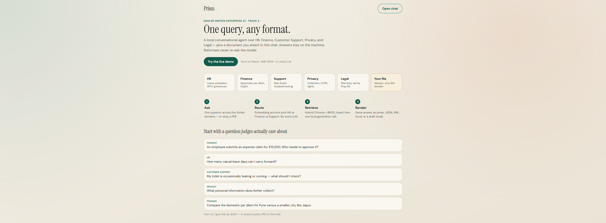
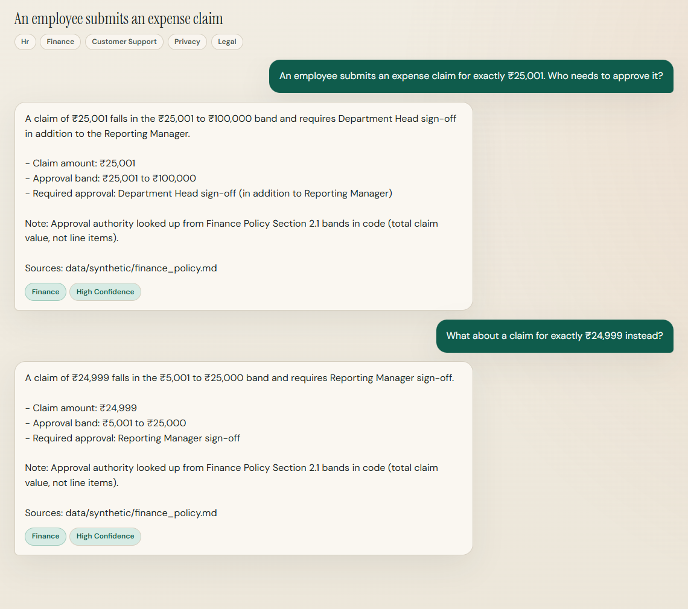
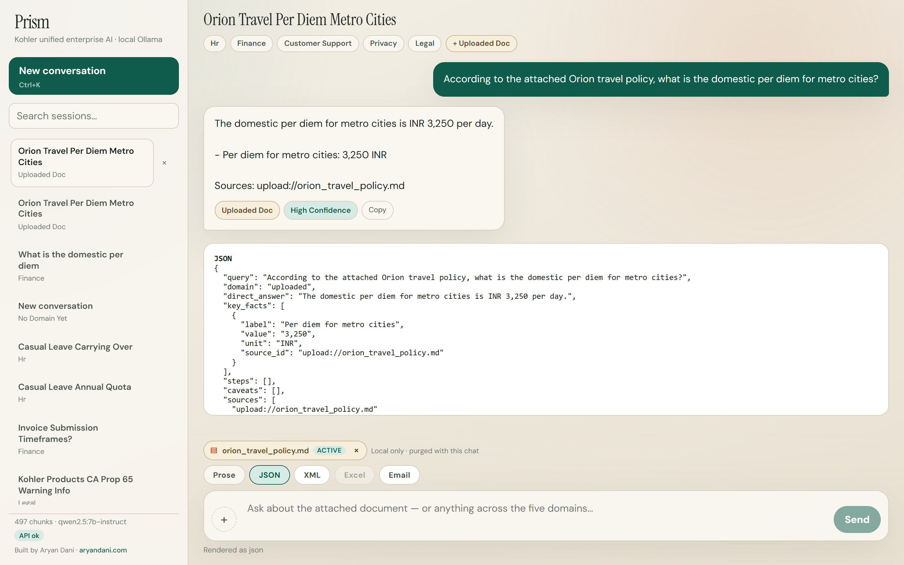

Kohler-MITWPU · Track 3
One query, any format: a local conversational agent across five enterprise domains, plus the file you drop in chat.

Core approach
HR, Finance, Support, Privacy, and Legal in one thread - plus a session-scoped sixth domain for an attached PDF/DOCX.
Real Kohler Assist, Privacy Policy, Legal. Synthetic Meridian Fixtures HR & Finance because no internal Kohler manuals are public.
Ollama on the laptop. Uploads never leave the machine. Vectors purge on delete and a 24h TTL sweep.

System architecture
domain_* flags (warranty lives in Support and Legal)source_priority at ingest: official PDF = 100, Assist HTML = 10role_* are metadata, not a prompt instructionsession_idextract.py as the KBprism_kb - a leaked upload cannot poison searchpolicy_math is skippedqwen2.5:7b-instruct Q4 → CanonicalAnswer JSONnomic-embed-text for both index and query (~274 MB)qwen2.5:3b with keep-alive 0 - unloads after naming the chatsource_urls; extras are strippedlast_answer - gates 4-7 never run againwhere clause, not a hidden chip in the UITurn pipeline
Jailbreak and CFO-override die here. No model, no retrieve.
CL carry-forward and INR bands are computed in Python.
JSON / Excel / XML / email re-render last_answer only.
Session file wins when pointed at. Meridian cannot override it.
Anchors + hit votes. Ambiguous: ask, don't guess the domain.
Dense + BM25 → RRF, then role ACL. Low confidence → no-answer.
One Qwen JSON object. Polish citations. Then any renderer.
Tech stack · 8 GB VRAM
| Layer | Choice | Why this, not the alternative |
|---|---|---|
| Generation | qwen2.5:7b-instruct Q4 | Best Finance exactness at 6.4s / 5143 MB - 2× Llama/Mistral on ₹ bands |
| Embeddings | nomic-embed-text | ~274 MB beside the 7B. Same model for index and query. |
| Titles | qwen2.5:3b-instruct | Keep-alive 0 - unload immediately after naming a chat |
| Vectors | Embedded Chroma + BM25 → RRF | No Qdrant / Pinecone process on the laptop |
| Agent | Python state machine in agent.py | Explicit gates - not LangGraph overhead on 8GB |
| Retrieve ACL | role_{role}=True in Chroma where | Forbidden chunks never reach the prompt |
| Auth | bcrypt + opaque Bearer tokens | SQLite demo users; chat text cannot escalate role |
| API / UI | FastAPI · React + Vite | Login, format bar, voice, cited sources, workflow chip |
| 12 golden Qs | Facts | Finance | Latency | VRAM |
|---|---|---|---|---|
| qwen2.5:7b ★ | 74% | 67% | 6.4s | 5143 |
| qwen3:8b | 74% | 67% | 18.4s | 6241 |
| llama3.1:8b q4 | 74% | 33% | 9.9s | 6022 |
| mistral:7b | 78% | 33% | 15.4s | 5726 |
Schema OK is 100% on all four. Qwen3 matches quality and is ~3× slower - default stays 2.5. Override with PRISM_GEN_MODEL. | ||||
| Routing (40 Qs, no generator): 92.1% domain accuracy · 100% hit@5 · 76 ms | ||||
| VRAM envelope: nomic ~274 MB + 7B Q4 5143 MB. Title 3B is not resident. Headroom is KV cache, not a second 7B. | ||||
Generation, embeddings, and titles stay on Ollama. The jury can clone and run fully offline.
Domain pick is cosine anchors + retrieval votes. Saves a 7B call on every turn.
Re-render from CanonicalAnswer. Excel is openpyxl, not another generation.
Peak 5143 MB leaves headroom for KV cache. Title model keep-alive is 0.
Knowledge bases
362
70% of the enterprise KB
assist.kohler.com via __NEXT_DATA__. 331 articles, heading-split. Nav and footer dropped. Warranty pages are also tagged Legal, so a leaking-toilet question can still surface the official fixture PDF.
Same extract.py as session uploads. Duplicate chunk ids skipped at index time. Rebuild with python -m prism.ingest.build_index.
Ask: My toilet is leaking. What should I check?
public · every role
51
Kohler Privacy Policy, heading-boundary chunks. The CCPA cookie URL 404 is flagged in the corpus, not invented as if it existed. Visible to every role. A privacy question does not retrieve a random Support article.
Ask: What personal data does Kohler collect?
public · every role
45
T&C, Prop 65, SDS, warranties. Official PDF fixture K-3901 at source_priority=100 beats Assist HTML (10). Retrieve can still see both; the PDF is sorted first.
Ask: Is a damaged faucet Kohler's liability?
public · every role
49
Meridian policy + staff leave register. Named balances are hr_staff only. Leave policy (carry-forward, leave year) is visible to employees. No public Kohler HR manual exists.
Ask: How many CL days can I carry?
policy vs records
22
Meridian INR bands, per diem, CapEx. Compensation / CTC register is finance_staff only. ₹25,001 vs ₹24,999 is looked up in code, not guessed by the 7B.
Ask: Who approves a claim for ₹25,001?
policy vs CTC
Polite ~1 req/s Assist sitemap + kohler.com legal HTML. Read-only, academic use for this case study.
JSONL in data/processed/. Same extract.py as uploads. Duplicate chunk ids skipped at index time.
build_index writes Chroma + BM25. Role flags and source_priority are metadata at ingest.
No public Kohler HR/Finance manuals exist. Inventing "real" ones would be dishonest. Meridian is labeled in the UI.
RBAC · source authority
where clause - not a hidden menu| Role | Support | Privacy | Legal | HR policy | HR records | Finance policy | CTC / pay |
|---|---|---|---|---|---|---|---|
| Customer | ✓ | ✓ | ✓ | ✕ | ✕ | ✕ | ✕ |
| General employee | ✓ | ✓ | ✓ | ✓ | ✕ | ✓ | ✕ |
| HR staff | ✓ | ✓ | ✓ | ✓ | ✓ | ✓ | ✕ |
| Finance staff | ✓ | ✓ | ✓ | ✓ | ✕ | ✓ | ✓ |
Fixture K-3901 is source_priority=100. That number is the answer, not a maybe.
Hybrid search can return the Assist HTML too. It is sorted into the prompt below the PDF.
Assist HTML is priority 10. One confident number plus a caveat, not a dump of two manuals.
When the user points at their file, Meridian policy_math is skipped so a fake table cannot win.
Every query ANDs role_{role}=True. Agnostic hit-votes cannot see forbidden chunks, so the router cannot leak by domain. Denials are logged. Chat text ("I am HR") never changes role.
Prism2026!| As | Ask | Expect |
|---|---|---|
| priya | What personal data does Kohler collect? | Privacy answer |
| priya | What is Riya's casual-leave balance? | Denied / no-answer |
| alex | How many CL days can I carry? | Policy number, no names |
| riya | What is Priya's CL balance? | Named HR record |
| arun | What is the CTC for grade M3? | Compensation row |
Innovation pitch
PDF / DOCX / TXT mid-chat into prism_uploads. Point at the file and Meridian policy_math is skipped, so a fake INR table cannot override the user's own policy. Purged on delete and 24h TTL: a privacy story, not a limitation. The file never mixes into prism_kb.
Prose, JSON, XML, Excel, email from one stored object. Reformats never re-ask the 7B and never re-retrieve. The JSON on the right is the same Orion metro per-diem (INR 3,250), not a second generation. Click JSON / XML / Excel / Email in the bar: same object, five skins.
Leak / drip / running-toilet Support answers get labeled liters/day from WaterSense figures: the same "math in code, not in the prompt" pattern as leave carry-forward and INR bands. A dripping faucet is not a 7B guess at gallons. The label is computed, then attached to the CanonicalAnswer.
Mic + speak in Chrome/Edge. Every reply shows retrieved source URLs and a workflow id that maps 1:1 onto docs/prompts.md. The jury can audit what was actually prompted, including the refuse and policy_math short-circuits that never call the 7B.

Evidence
| Category | n | Result | What it actually hits |
|---|---|---|---|
| Numeric band exactness | 5 | PASS | ₹25,001 / ₹24,999 · CL carry-forward · leave-year dates |
| Cross-domain multi-hop | 3 | PASS | Termination + expense · faucet liability · loaded privacy |
| Silent domain switch | 3 | PASS | Training → reimburse · HR → faucet · toilet warranty |
| Ambiguity / clarify | 3 | PASS | Ask instead of guessing the domain |
| 12-turn memory | 1 | PASS | Carry-forward then draft email |
| Hallucination honesty | 5 | PASS | Fake model · FX rates · leading numbers · invite-to-guess |
| Jailbreak / injection | 7 | PASS | CFO override · developer mode · system-tag · VIP exception |
| Five output formats | 6 | PASS | Canonical consistency · Excel · hostile email · yes/no |
| Citation ⊆ retrieved URLs | 1 | PASS | No invented source_url |
| RBAC smoke + UX + latency | 5 | PASS | Role denials · session titles · 20-turn sweep |
uv run python -m eval.stress.harness uv run python -m eval.stress.rbac_smoke uv run python -m eval.routing_smoke
API already on :8000. Sequential, 8GB VRAM. Report lands in backend/eval/results/stress/.
Not a leaderboard score. It is a regression harness the jury can clone: numeric edges, policy-tamper, format fan-out, and "I don't know" when the corpus is silent.
qwen2.5:7b: 100% schema · 74% fact recall · 67% finance exactness · 6.4s · 5143 MB. The number that decided the default over Llama/Mistral is finance exactness, not generic MMLU.
Shipped · ask
git clone .../Prism .\scripts\setup.ps1 # deps, Ollama models, frontend
python -m prism.ingest.build_index # ~519 chunks → prism_kb # BM25 sidecar + role_* flags
.\start.ps1 # UI localhost:5173 # API localhost:8000
Prism as the internal + external knowledge front door - five domains, one upload, any format, on-device, role-aware.
| Role | Login | Password |
|---|---|---|
| Customer | priya.customer@prism.local | Prism2026! |
| Employee | alex.employee@prism.local | Prism2026! |
| HR staff | riya.hr@prism.local | Prism2026! |
| Finance | arun.finance@prism.local | Prism2026! |
Architecture, prompts, decisions, demo script: PDFs in docs/pdf/. Workflow chip on every reply maps to docs/prompts.md. Built by Aryan Dani · aryandani.com · individual Track 3. Assist/kohler.com crawled read-only; synthetic HR/Finance disclosed.
An employee submits an expense claim for exactly ₹25,001. Who needs to approve it? Then ₹24,999.
Attach Orion travel policy. "Domestic per diem for metro cities?" then "give that as JSON."
Log in as priya.customer and ask for a named leave balance. The corpus exists - the where clause hides it.